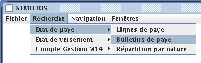
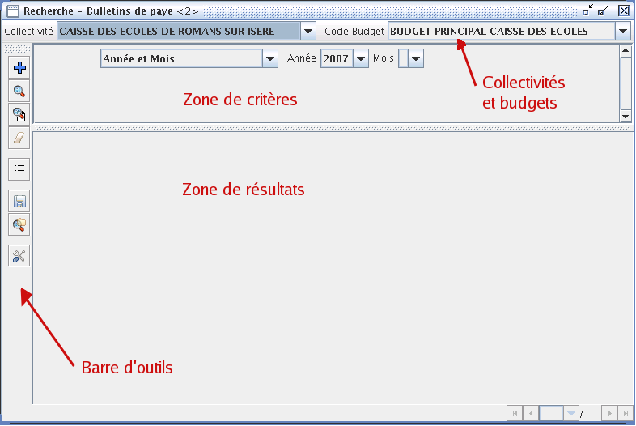
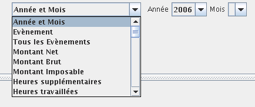
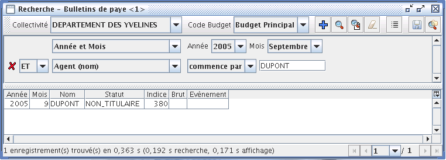
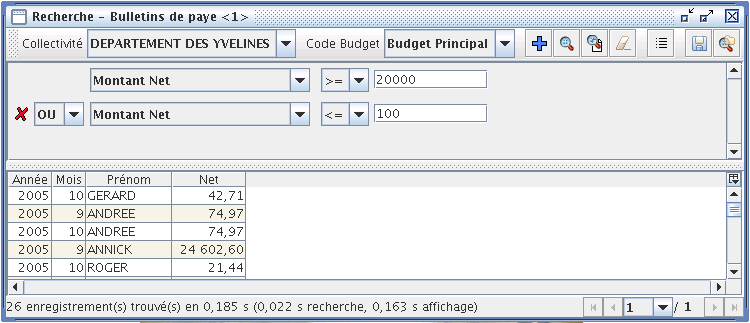
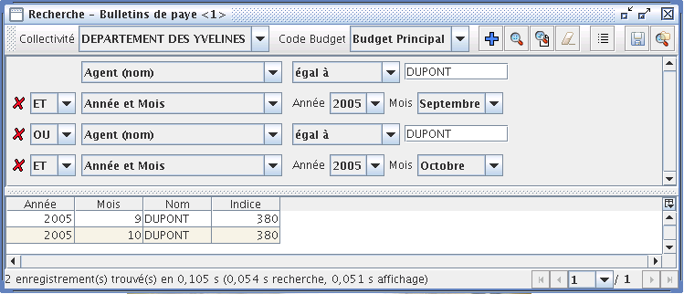
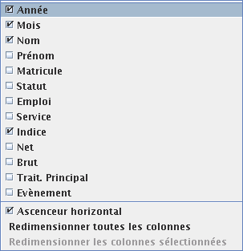
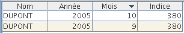

Recherches
Accès aux recherches
Fenêtre de recherche
Barre d'outils
Zone de critères
Zone de résultats
L'accès aux recherches n'est possibles que si des données ont été importées. Dans le menu Recherche, séléctionnez le type de document sur lequel vous voulez effectuer une recherche, puis le type d'élément que vous souhaitez rechercher. Le détail des types de document et des éléments est disponible dans les spécificités des documents.

Quel que soit l'élément recherché, la fenêtre de recherche est la même. Elle se compose de la barre de collectivités et de budgets, d'une barre d'outils, d'une liste de critères et d'une zone de résultat.

Cette barre contient une première liste comprenant la liste des collectivités pour lesquelles des données ont été importées. L'utilisateur doit séléctionner la collectivité sur laquelle vont porter ses recherches.
La liste suivante comporte la liste des budgets de la collectivité séléctionnée pour lesquels des données ont été importées.
La barre d'outils contient l'ensemble des boutons permettant de réaliser des actions dans cette fenêtre.
Les éléments de la barre d'outils sont détaillés dans le tableau ci-dessous :
| Bouton | Description |
|---|---|
| Permet d'ajouter un critère à la liste des critères | |
| Permet de lancer la recherche | |
| Permet de lancer la recherche en tâche de fond | |
| Permet de supprimer tous les critères | |
| Permet d'afficher la nomenclature si celle-ci est disponible pour ce type de document | |
| Permet d'enregistrer la recherche courante pour la rejouer plus tard | |
| Permet d'ouvrir une recherche prédéfinie ou une recherche enregistrée | |
| Permet d'accéder à la fenênetre de modification de l'environnement. |
La zone de critères sert à construire les filtres à appliquer à la recherche. Elle doit contenir au moins un critère. L'utilisateur peut ajouter autant de critères qu'il le désire.
A l'ouverture de la fenêtre de recherche, il y a toujours un critère affichè.

La première liste contient tous les critères disponibles. En fonction du critère que choisit l'utilisateur, les champs correspondants s'affichent. Dans l'exemple ci-dessus, le critère porte sur Année et mois, l'utilisateur peut sélectionner l'année et le mois qu'il veut parmi ceux disponibles.
XéMéLios permet de combiner plusieurs critères afin d'affiner au mieux les recherches. Pour ce faire, il suffit de cliquer sur le bouton pour ajouter un critère dans la zone de critères. Deux critères peuvent s'appliquer à une recherche en formant un ET ou un OU.
Un ET fait que les éléments recherchés doivent correspondre aux deux critères. Par exemple, une recherche sur les bulletins de paye avec une premier critère "Année mois" : septembre 2005 ET un second critère "Agent (nom)": DUPONT, ramènera les bulletins de paye des agents s'appelant DUPONT pour le mois de septembre 2005.

Un OU fait que les éléments recherchés doivent correspondre à l'une ou l'autre des deux critères. Ainsi, une recherche sur les bulletins de paye avec un premier critère "Montant Net" >= 20000€ OU un second critère "Montant Net" <= 100€ renvoie tous les bulletins dont les montants nets sont inférieurs à 100€ OU supérieurs à 20000€.

L'action des liens ET et OU n'est pas la même vis à vis de la précédence des opérateurs. Ainsi, si on veut réaliser une recherche
condition1 ET (condition2 OU condition3)
il faut répéter la condition1 dans les deux branches du OU :
condition1 ET condition 2 OU condition1 ET condition3
Par exemple, pour chercher les bulletins de septembre OU d'octobre de l'agent DUPONT, il faut effectuer la recherche suivante :

Ceci est dû au fait qu'il n'y a pas de système de parenthésage entre les critères dans XéMéLios.
Pour supprimer un critère, il suffit de cliquer sur le bouton de suppression situé sur la ligne du critère à supprimer. Il n'est pas possible de supprimer le premier critère puisqu'il faut avoir au moins un critère pour réaliser une recherche.
La zone de résultat sert à afficher le résultat de la recherche. Elle comporte un tableau permettant d'afficher les éléments trouvés, et d'un composant permettant de naviguer d'une page de résultat à l'autre.
Il est possible de personnaliser l'affichage du résultat de recherche. A l'aide du bouton situé en haut à droite de la zone de résultat, on peut redimmensionner automatiquement les colonnes, masquer ou afficher les colonnes

En agissant sur les entêtes de colonnes, il est possible de trier le contenu du tableau et de déplacer les colonnes.

Lorsque le nombre d'élément trouvé est trop important pour être affiché en une seule fois, XéMéLios affiche les résultats par page. Le composant de navigation indique le nombre de pages disponibles en bas à droite de la fenêtre de recherche.
L'utilisateur peut alors utiliser les différents boutons pour naviguer de page en page, ou la liste déroulante pour accéder à une page en particulier.
Lorsqu'un élément est visualisable, on peut l'afficher en double-cliquant sur une ligne du tableau de résultat de recherche. Par exemple, pour les recherche sur les bulletins de paye, en double-cliquant sur une ligne on affiche le bulletin de paye correspondant. Pour certains éléments, il n'y a pas de visualisation possible, comme par exemple pour les états de répartition par nature.
Certains éléments proposent des actions dans la liste de résultat de recherche. En faisant un clic-droit sur une ligne du tableau de résultat de recherche, on fait alors apparaître les actions disponibles. Par exemple, depuis la paye, il est possible de visualiser tous les bulletins d'un agent, ou d'exporter un rapport d'analyse.